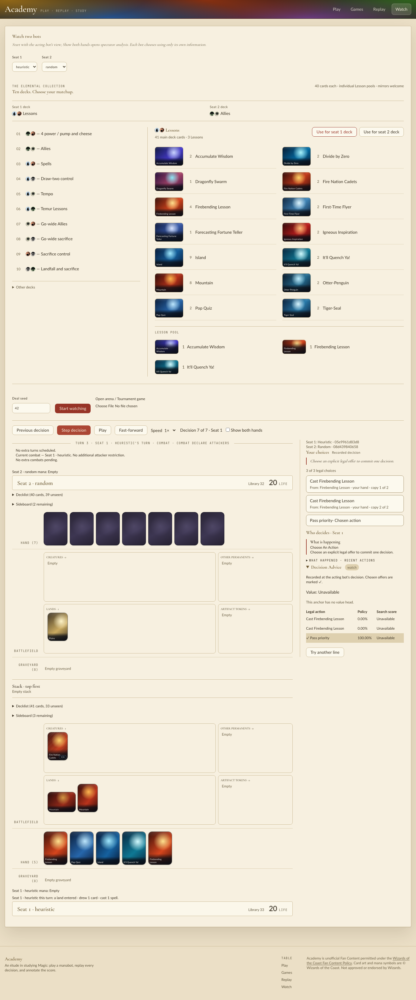
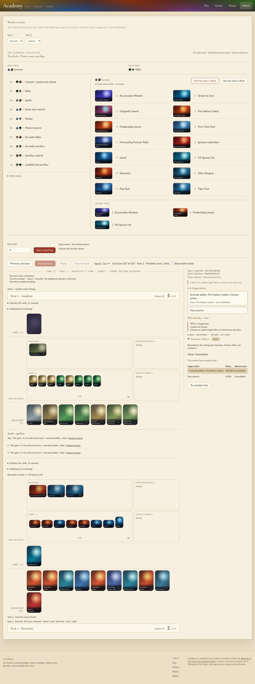

Installed extension: managym/_managym.cpython-313-darwin.so (release, built 12:46; later commits changed only comments and docs). Host load average ≈ 500 during the run (other agents). These checks drove the public surfaces: the docs example, native and training batch play, the local evaluation CLI, and Academy's Watch page. No code was changed in this pass.
Ran the docs/engine.md#built-in-heuristic-opponent snippet in a fresh process.
2 <class 'tuple'> 2 [5, 5] # reset returns (obs, info) per slot; step returns 5-tuples [(0.0, False, False), (0.0, False, False)]
Matches the guide's description.
A native VectorEnv with 8 slots on authored Elemental decks. The learner in seat 0 picks uniformly random legal actions. A check asserted that every surfaced observation's viewer is seat 0, so the opponent never surfaced a decision. Play ran to 200 finished games.
random elemental_ur v elemental_gw: learner W102 L99 rewards=[-1.0, 1.0] 19736 learner steps 11622/s heuristic elemental_ur v elemental_gw: learner W11 L189 rewards=[-1.0, 1.0] 9656 learner steps 9073/s heuristic elemental_bg v elemental_ug: learner W28 L172 rewards=[-1.0, 1.0] 11552 learner steps 3867/s
The heuristic beats a random learner 86–95% of the time, against about 50% for the random opponent. Terminal rewards are ±1 from the learner's side. Finished slots reset automatically. The rates come from a heavily loaded host: they show the opponent is usable, not that it is fast.
Trained a real checkpoint with uv run manabot train --out .runs/qa277-small (completed). Then ran the guide's command:
uv run python -m manabot.eval.local --checkpoint .runs/qa277-small/self-play-raw.pt --opponent heuristic \ --deal-seed 101 --out .runs/qa277-eval-h --seconds 300 --workers 2 completed: 1/1 complete deals; 4/4 games; evidence: .runs/qa277-eval-h/panel score: 0.000 (1 deal block; ...); local-check-not-admission # exit 0, 6.3 s wall
version: native-v2, compute_class_id: heuristic-cpu-v2, display name "Rule-of-thumb heuristic".panel/replay.json: passed. It covered 4 games and 548 decisions, with 0 mismatches of any kind and 0 private_exposures.--request request.json --out .runs/qa277-eval-h2 gave the same results across all 1,096 decision records. Chosen offers, Commands, frames and state digests were identical; only allocation IDs, inference IDs and timings differ.Started ./scripts/play --port 8771 --frontend-port 5191. Its ACADEMY_PLAY_READY line named this checkout's cp313 module. In headless Chromium I opened /replay?watch=1, chose Seat 1 heuristic and Seat 2 random, and used the default Lessons v Allies decks with seed 42. I pressed Start watching, stepped 6 decisions, then fast-forwarded to the end. No page errors. Stopped with SIGINT to scripts/play.py; no processes were left running.
After 7 decisions: the heuristic holds its Firebending Lessons and passes in combat, and the Decision Advice panel marks the recorded choice. The identity "Seat 1: Heuristic · 05e9961d83d8" is shown.

Finished at decision 337, turn 27: "Finished: seat 1 wins". The heuristic was at 2 life and random at 5. Pump activations are on the stack for lethal.

opponent_policy="Heuristic" -> ValueError unsupported opponent_policy: Heuristic opponent_policy="passive" -> ValueError unsupported opponent_policy: passive managym.Heuristic(max_actions=0) -> ValueError heuristic max_actions must be positive HeuristicPlayer(max_actions=0|True) -> ValueError heuristic max_actions must be a positive integer Heuristic(max_actions=1).select_action(obs) -> 0 two fresh selectors, same observation -> same action
Works now:
native-v2/heuristic-cpu-v2 identity, replay-verified with no private exposure, and deterministic on repeat.Not reached here:
Still wrong / rough, worst first:
unsupported opponent_policy: X does not list the accepted names (none, random, heuristic). The docs do list them. This was left unchanged because the message comes from main's MTG-272 surface.